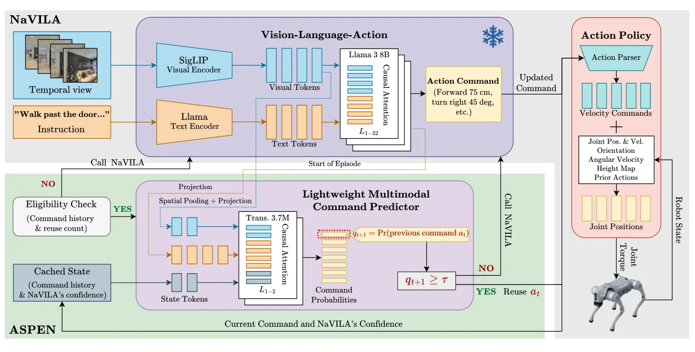
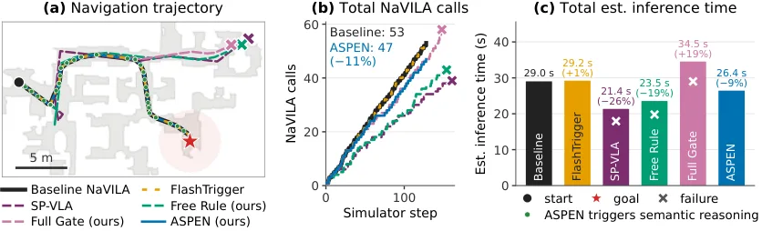
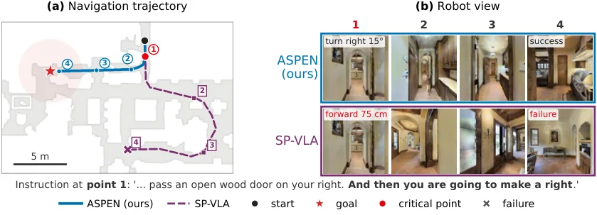

ASPEN：用指令持续性预测做自适应语义推理，加速导航 VLA
ASPEN: Adaptive Semantic Reasoning via Command Persistence Prediction for Efficient Navigation VLAs
不换策略、不改动作空间，只在「基座会不会改口」这件事上做二分类：VLA 调用 75.9→68.7 次/集、估计时延 41.5→38.2 s，SR 53.1%（基线 53.0%）、与基线动作序列完全一致率 92.1%；相比 FlashTrigger 多省 3.3 次调用但一致率从 97.5% 降到 92.1%。
VLA calls per episode
estimated inference time
exact action agreement
success rate
作者、单位与技术谱系 · Research context
作者与单位
研究脉络
- NaVILA（Cheng et al., 2025）被调度的基座关系：本文不改其权重与动作空间，只决定何时调用它；所有效率与保真度指标都是相对冻结 NaVILA 测量的。[论文摘要与 §3]
- FlashVLA / FlashTrigger（Tan et al., 2025）直接对照关系：同样做「动作复用」触发，但依据动作历史一致性与视觉 token 重叠；本文改为预测基座指令是否持续，并在同一评测下对比调用数与一致率。[论文 §1 与 §3]
- SP-VLA（Li et al., 2026）直接对照关系：用运动历史在 VLA 与轻量动作生成器之间调度；本文强调「不用轻量控制器替代动作」，只调度基座是否重算，二者在失败模式上形成对照。[论文 §1 与 §2]
合作网络
- Vieri N. Akustia ↔ Bin Hu（University of Houston 同单位共同署名）Vieri N. Akustia → Bin Hu关系：共同署名（同一论文、同一学校不同系）[论文首页署名与单位]
- ASPEN → NaVILA（明确技术依赖）ASPEN scheduler → NaVILA policy关系：明确技术依赖（冻结基座，不训练）[论文摘要、§2 与 §3]
- ASPEN → SigLIP / Llama-3（冻结编码器依赖）ASPEN predictor → SigLIP vision encoder / Llama-3 text encoder关系：明确技术依赖（冻结预训练编码器）[论文 §2]
作者单位与邮箱取自首页；技术依赖依据摘要、§1–§3 的显式表述。原文未标注通讯作者，也未说明两位作者之间的师生或课题组关系，本文不推断。
方法本质拆解 · What actually changed
是不是微调？
被调度的 NaVILA 完全冻结，不参与训练；训练的是一个新增的轻量预测器：SigLIP 与 Llama-3 编码器冻结，只训两层 Transformer、状态编码与输出 MLP，用 10 类下一指令交叉熵，在 R2R-CE 的 2,536 个 episode 上训 3 个种子、最多 100 epoch。训练语料来自冻结 NaVILA 的 rollout，并额外补入「错误复用之后」的样本，让预测器见过失败边界。
有没有额外约束？
两层硬门控限制风险：资格检查只在「上一条是前进类指令」且「连续复用少于 8 次」时开闸，其余边界直接调用 VLA；概率阈值 τ=0.9418 在源域标定集上按「发散率 ≤10%」的约束选出。另有结构性约束：当前视图的 81 个 token 不进入 Transformer、只做注意力池化查询，保证预测成本可控；复用时 NaVILA 的观测历史仍持续更新，避免历史断裂。
推理/后端到底做了什么？
每个指令边界先算资格，再（若合格）跑一次轻量预测器：SigLIP 编码三帧、状态向量拼接、两层 Transformer、注意力池化当前视图、MLP 输出分布，约 19.45 ms；超过阈值就沿用上一条指令，否则调用 NaVILA 并刷新缓存置信度。没有重规划、没有轨迹后处理、没有对下游控制器做任何修改，因此它是纯调度层，可与任意导航策略组合。
方法本质是什么？
本质是把「是否需要重新做语义推理」从启发式规则变成对基座策略行为的在线预测：预测的不是场景是否变化，而是基座下一步的输出分布是否仍是同一条指令。它改变的不确定性是「复用决策的错误率」，用资格检查压住高风险边界、用阈值把发散率控制在标定水平。它没有做的是估计复用对任务成功的因果影响，也没有给目标域任何形式保证。
输入三帧观测、指令、执行历史与缓存置信度；用冻结编码器 + 轻量 Transformer 预测基座是否会重复上一条指令；在资格检查通过且概率超过 τ 时复用指令、否则调用 NaVILA；直接效果是调用减 9.5%、估计时延减 8.1% 且动作序列一致率 92.1%。

桥接价值Bridge
桥接价值
导航 VLA 的开销大头是反复调用大模型做语义推理，而连续前进时上一条指令往往仍然有效——问题在于「什么时候它不再有效」不能由视觉变化或运动历史单独判断，因为前进本身就会带来大幅视觉变化，而是否已越过指令中的地标又需要结合指令语义。ASPEN 把这个问题重述为「基座策略下一步会不会改口」，把调度变成一个可监督的预测任务。这个重述对我们有直接借鉴：任何「降频/跳帧/缓存」优化真正需要的都不是场景是否变化，而是下游决策是否改变。
方法与模块Method
方法摘要
调度发生在高层指令边界而非仿真步。每个边界先做资格检查：只有解析为前进类指令、且连续复用次数小于 8 时才允许预测。预测器用冻结 SigLIP 编码首帧与最近两个决策点视图（9×9 token 池化到 256 维），冻结 Llama-3 编码指令一次，学习得到的状态向量编码已执行指令、幅度、步数、复用标记、进度特征与缓存的 NaVILA 置信度；两层 4 头 Transformer 做因果自注意力与指令交叉注意力，输出状态向量再去查询当前视图，最后 MLP 给出 10 类指令分布。若「上一条指令」的概率超过阈值 τ=0.9418 就复用，否则调用 NaVILA。阈值在源域标定集上按「发散率 ≤10% 前提下最大化调用节省」选出。
可迁移模块
第一个可迁移的是「资格检查 + 概率阈值」的双层门控：先用便宜的规则排除明显不该复用的边界（非前进指令、连续复用过长），再用学习模型判断剩余边界，这比端到端一个分类器更容易控风险。第二个是「缓存下游模型置信度作为特征」：置信度只在真正调用时刷新，于是预测器知道上一次决策有多确定，这在我们做观测门控时等价于把上一次更新的后验方差喂给门控器。第三个是保真度指标「与基线动作序列完全一致率」，它比成功率更能暴露「省了算力但行为已经漂移」的情况。

证据Evidence
关键证据与数字
Table 1（1,223 个 RxR-CE val-unseen episode，未做目标域调参）：基线 NaVILA 75.9 次调用 / 41.5 s / SR 53.0% / OS 59.9% / nDTW 63.3 / NE 5.93；ASPEN 68.7 次（−9.5%）/ 38.2 s（−8.1%）/ SR 53.1% / OS 59.8% / nDTW 63.2 / NE 5.95 / 一致率 92.1%。对照：FlashTrigger 72.0 次 / 39.7 s / SR 53.0% / 一致率 97.5%；SP-VLA 69.4 次 / 38.0 s / SR 42.7%；Free Rule 61.0 次 / 33.4 s / SR 49.1% / 一致率 7.1%；Full Gate 66.9 次（−11.7%）但时延只降 3.3%，说明调度开销不可忽略。门控本身成本 19.45 ms（预测器 1.5 ms、SigLIP 编码 10.5 ms），在 RTX PRO 6000 Blackwell 上以 241 次门控调用、20 个 episode 测得。
边界与下一步Limits & Next Step
边界与风险
作者承认：只验证了一个基座策略（NaVILA）与一个目标数据集；时延是估计值，未在真机测端到端延迟与能耗；阈值在源域标定，不提供目标域发散率保证；与 FlashTrigger 相比一致率从 97.5% 降到 92.1%，属于效率换保真度而非全面更优。我们还要补两点：一是「复用」只对前进类指令开放，转弯/停止一律重新推理，因此它省下的算力与任务中前进指令的占比强相关，在转弯密集的室内指令上收益会明显缩水；二是 92.1% 的一致率意味着约 8% 的 episode 动作序列与基线不同，而 SR 只差 0.1 个百分点，说明这些差异大多无害——但论文没有逐条分析是否有「差一点就失败」的临界案例。
下一步实验
最小验证可以放在我们自己的日志上，不需要机器人：取一段已有的导航/巡航决策日志，把「下一个决策是否与上一个相同」作为标签，用与 ASPEN 同构的轻量特征（最近两帧、上一决策、置信度、进度）训练预测器，比较「固定跳帧」「按视觉变化触发」「按持续性预测触发」三种策略在等误报率下的节省率与决策一致率。第二步再验证阈值迁移：在 A 场景标定 τ、在 B 场景评估，画出「源域发散率上限」与「目标域实际发散率」的偏离曲线，看这种源域标定是否稳定。只有这两步都通过，才值得把它接进真实管线。

